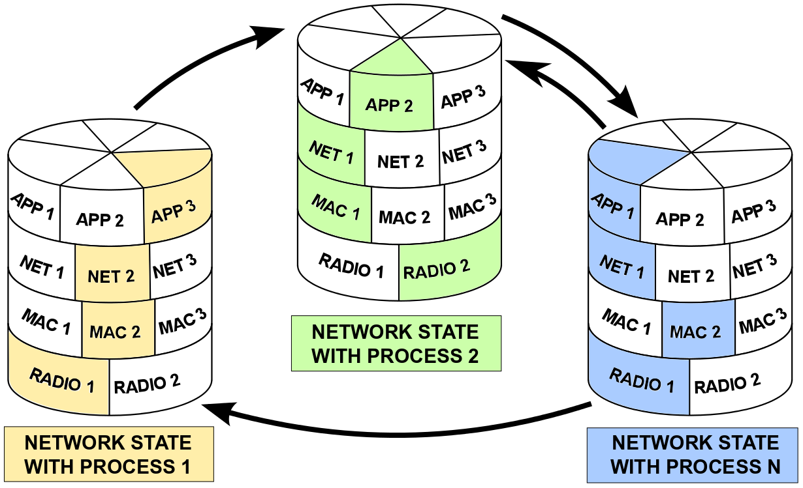
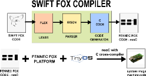
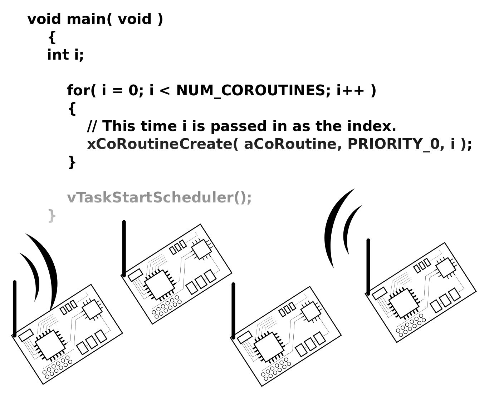
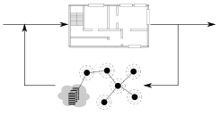
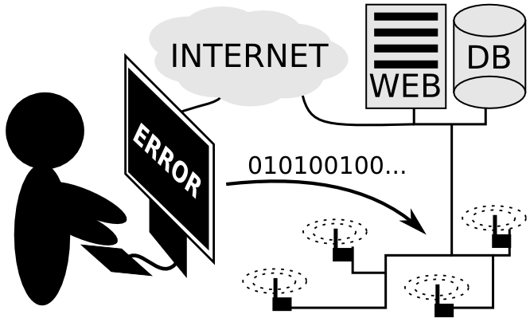
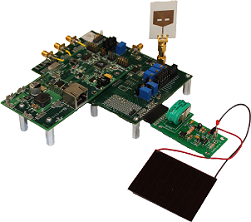
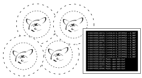
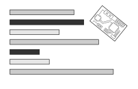
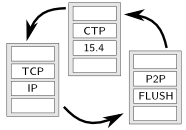

|
Marcin K Szczodrak |
Biography
- I was a PhD student in Computer Science department at Columbia University.
- In February 2015 I defended my dissertation "Multitasking on Wireless Sensor Networks."
- At Columbia University I was working in the System Level Design group with prof. Luca Carloni.
- Currently I'm a software engineer at Nest, working on Weave protocol and little bit on Thread.
Education
- Ph.D. program in the Computer Science Department, Columbia University, 2009-2015
- M.S. in Computer Science, City College, CUNY, 2010
- Studying @ Ph.D. program in the Computer Science Department, The Graduate Center, CUNY, 2007-2009
- B.S. in Computer Information Systems, John Jay College of Criminal Justice, CUNY, 2004-2007
- Franklin D Roosevelt High School, Brooklyn, NY, 2002-2004
Past Projects
|
 | Fennec Fox is a platform for low-power wireless embedded devices requiring dynamic network reconfiguration and communication service adaption. Fennec Fox is a platform providing network reconfiguration mechanism. The platform consists of a four-layer network protocol stack, where at runtime various library module may support each layer service. Fennec Fox also provides mechanisms ensuring that all nodes within a network are configured in the same way. More @ Project Website |
|
 |
Swift Fox is a programming language for runtime dynamic network reconfiguration of low-power wireless network running on Fennec Fox platform. Swift Fox compiler is written in C using Flex and Bison libraries. Flex is a tool for generating lexical analyzers and it is an open version of lex. Bison is a parser generator and it is a GNU version of yacc. The generated output of the Swift Fox program is nesC code. More @ Project Website |
|
 |
Hardware-Software-Network Codesign for Internet-of-Things introduces a new development environment for wireless embedded devices that consists of hardware platform simulator, embedded software running on the simulated instruction-accurate hardware, and wireless communication. Our simulator supports two modes of operation: standalone with hardware, software and network simulation running on a single machine, and testbed mode, with radio hardware-in-the-loop replacing the simulated wireless communication. |
|
 |
GOALI Project is NSF sponsored project researching methods for network-enabled embedded monitoring and control for high-performance buildings. Because building occupancy has high-impact on building's energy consumption (HVAC, Light, etc) we focus on development of centralized and distributed occupancy estimation algorithms and deployment of those algorithms in buildings with supported cyber infrastructure, such as wireless networks of sensors and actuators supported with cloud computing. |
|
 | Open Testbed Framework The Open Testbed Framework (OTF) consists of a set of tools for rapid deployment of a Low-Power Wireless Network (LPWN) testbeds. The LPWN is the underlying communication architecture for systems monitoring environment, such as Wireless Sensor Networks (WSN), and systems interacting with the surrounding environment through sensors and actuators, referred to as Cyber-Physical Systems (CPS). More @ Project Website |
|
 | Energy-Harvesting Active Networked Tags (EnHANTs) are small, flexible, and energetically self-reliant devices that can be attached to objects that are traditionally not networked (e.g., books, furniture, walls, doors, toys, keys, clothing, and produce), thereby providing the infrastructure for various novel tracking applications. Examples of these applications include locating misplaced items, continuous monitoring of objects (items in a store, boxes in transit), and determining locations of disaster survivors. |
|
 | Cape Fox is a simulator supporting Fennec Fox platform and Swift Fox programming language. The simulator allows to simulate the same nesC and Swift Fox code that is actually running on hardware motes. The three top layers of the Fennec Fox network stack: Application, Network, and MAC, are executed exactly as they would run on a real hardware. The lowest radio layer is simulated, together with wireless data communication for IEEE 802.15.4 radios. More radio models are currently in implementation. Cape Fox is based on TOSSIM simulator and its TOSSIM Live extension, through which it support serial port communication, and by the same real-time data exchange with the outside (non-simulated) world. Cape Fox differs from TOSSIM by removing simulation of CSMA and MAC protocols and improving (adding new parameters) simulation of radio hardware and radio channel. Cape Fox is also message_t free. More @ Project Website |
|
 | As part of this project we design a set of wireless sensor and actuator applications to benchmark the performance of lpwn hardware architectures. |
|
 |
LPWN-IP brings TCP/IP to Fennec Fox platform. Currently researchers debate how to implement communication for LPWN. On one side there are various approaches proposing new communication protocols, such as CTP or Flush. On the other side, there are attempts of using standard TCP/IP approach with IPv6 addressing. In this project we design a network operating in two modes: standard IP and non-standard using ad-hoc protocols. |
Publications
- Modeling and Implementation of Energy Neutral Sensing Systems Marcin K Szczodrak, Omprakash Gnawali and Luca P Carloni Proc. of ENSSys Work., November, 2013. (PDF: ACM Author-Izer) (ACM) (PDF) (BibTex)
- An Open Framework to Deploy Heterogeneous Wireless Testbed for Cyber-Physical Systems Marcin K Szczodrak, Yong Yang, Dave Cavalcanti and Luca P Carloni Proc. of IEEE SIES Symp., June, 2013. (IEEE) (PDF) (BibTex)
- Dynamic Reconfiguration of Wireless Sensor Networks to Support Heterogeneous Applications Marcin K Szczodrak, Omprakash Gnawali and Luca P Carloni Proc. IEEE DCOSS Conf., May, 2013. (IEEE) (PDF) (BibTex)
- Prototyping Energy Harvesting Active Networked Tags (EnHANTs) Maria Gorlatova, Robert Margolies, John Sarik, Gerald Stanje, Jianxun Zhu, Baradwaj Vigraham, Marcin K Szczodrak, Luca P Carloni, Peter Kinget, Ioannis Kymissis and Gil Zussman. Proc. IEEE INFOCOM'13 mini-conference, Turin, Italy, April, 2013. (IEEE) (PDF) (BibTex)
- Demo: A Complete Framework for Programming Event Driven, Self-Reconfigurable Low Power Wireless Networks Marcin K Szczodrak and Luca P Carloni. ACM SenSys11, Seattle, WA, November, 2011. (PDF: ACM Author-Izer) (ACM) (PDF) (BibTex)
- Demo: Organic Solar Cell-equipped Energy Harvesting Active Networked Tag (EnHANT) Prototypes Gerald Stanje, Paul Miller, Jianxun Zhu, Alexander Smith, Olivia Winn, Robert Margolies, Maria Gorlatova, John Sarik, Marcin K Szczodrak, Baradwaj Vigraham, Luca P Carloni, Peter Kinget, Ioannis Kymissis and Gil Zussman. ACM SenSys11, Seattle, WA, November, 2011. (PDF: ACM Author-Izer) (ACM) (PDF) (BibTex)
- Demo: Prototyping UWB-Enabled EnHANTs Jianxun Zhu, Gerald Stanje, Robert Margolies, Maria Gorlatova, John Sarik, Zainab Noorbhaiwala, Paul Miller, Marcin K Szczodrak, Baradwaj Vigraham, Luca P Carloni, Peter Kinget, Ioannis Kymissis and Gil Zussman. ACM MobiSys11, Washington, DC, June 2011. (PDF: ACM Author-Izer) (ACM) (PDF) (BibTex)
- Prototyping Energy Harvesting Active Networked Tags: Phase II MICA Mote-based Devices Maria Gorlatova, Zainad Noorbhaiwala, Abraham Skolnik, John Sarik, Marcin K Szczodrak, Jiasi Chen, Michael Zapas, Luca P Carloni, Peter Kinget, Ioannis Kymissis, Dan Rubenstein and Gil Zussman. ACM MobiCom'10, Chicago, IL, September 2010 (PDF)
- Tiered Architecture for On-line Detection, Isolation, and Repair of Faults in Wireless Sensor Networks Sadaf Zahedi, Marcin K Szczodrak, Ping Ji, Dinkar Mylaraswamy, Mani B Srivastava and Robert Young. MILCOM, San Diego, CA, November 17-19, 2008 (IEEE) (PDF)
- Simulation Framework for QoI Characterization of Sensor Networks in the Presence of Faults Marcin K Szczodrak, Sadaf Zahedi, Ping Ji, Dinkar Mylaraswamy, Mani B Srivastava and Robert Young. The Second Annual Conference of the International Technology Alliance, Imperial College London, UK, September 16-18, 2008 (PDF)
- Multivariate Model for Data Cleansing in Sensor Networks Ping Ji and Marcin K Szczodrak. The Second Annual Conference of the International Technology Alliance, Imperial College London, UK, September 16-18, 2008 (PDF)
- Two-Tier Framework for Sensor Fault Characterization in Sensor Networks Sadaf Zahedi, Marcin K Szczodrak, Ping Ji, Dinkar Mylaraswamy, Mani B Srivastava and Robert Young. The Second Annual Conference of the International Technology Alliance, Imperial College London, UK, September 16-18, 2008 (PDF)
- Two-Level ZigBee-4G Design for Secure and Efficient Communications in the Resources Constrained Military Environment Marcin K Szczodrak, Jinwoo Kim and Yuncheol Baek. International Journal of Computer Science and Network Security, vol. 7 no.10, October 2007 (PDF)
- 4G and MANET, Wireless Network of Future Battlefield Marcin K Szczodrak and Jinwoo Kim. Proceedings of the 2007 International Conference on Security & Management, Las Vegas, Nevada, USA, June 25-28, 2007. (PDF)
- 4GM@4GW: Implementing 4G in the Military Mobile Ad-Hoc Network Environment Marcin K Szczodrak, Jinwoo Kim and Yuncheol Baek. International Journal of Computer Science and Network Security, vol.7 no.4, April 2007 (PDF)
Copyright Marcin Szczodrak 2005-2015